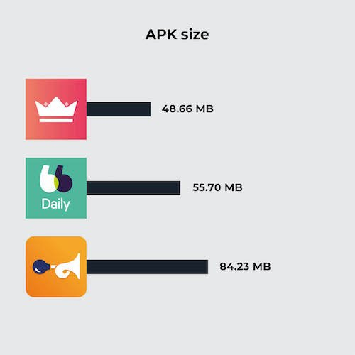
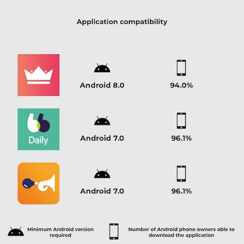
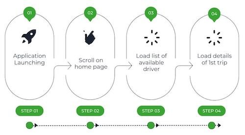
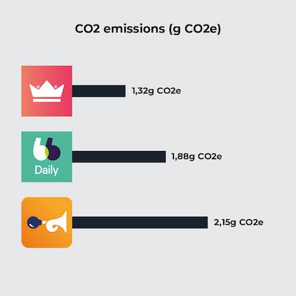
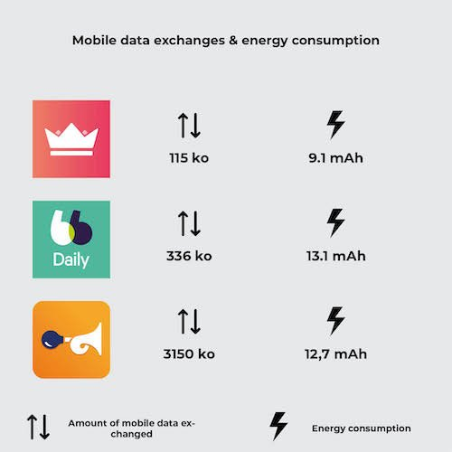

Everyday car-sharing is a way of sharing the environmental impact of car travel. There are applications that put drivers and passengers in touch with each other. However, the savings made during a journey must not be outweighed by the impact of the IS of these services. In this article, we will look at the eco-design practices of three daily car-sharing applications: BlaBlaCarDaily, Karos and Klaxit.


Methodology
This comparative study of mobile applications examines various aspects, such as the size of APK files (the installation files for Android applications), application compatibility and the greenhouse gas (GHG) emissions caused by their use. The results highlight significant differences between applications, underlining the importance of implementing an eco-design approach.
First of all, it’s important to remember that the vast majority of a smartphone’s environmental impact is due to its manufacturing phase. A great deal of energy and materials, some of them rare, are needed to manufacture the product. Therefore, to effectively reduce the impact of a mobile application, it is necessary to ensure that it does not force users to change phones in order to obtain a suitable user experience. This involves evaluating a number of criteria, including but not limited to the following:
Compatibility: an application must be compatible with all user terminals (OS, screen resolution, etc.). We found that some applications were designed exclusively for more recent versions, limiting access for users with older devices. This incompatibility often leads to frequent replacement of devices, which can waste natural resources and increase electronic waste.
Battery use: battery wear and tear is one of the material causes of the need to buy a new phone. One of the factors that wear out the battery is the number of charge/discharge cycles the phone goes through. It is therefore essential that using the application does not require too much energy so as not to accelerate the draining of the battery.
Performance: this criterion corresponds to the application’s response time. Firstly, the aim of an eco-design approach is to enable users who do not wish to renew their phone to have a pleasant user experience, even on older devices. Secondly, longer charging times mean faster battery wear. Finally, if the factor limiting performance is network quality, mobile users will be even more affected.
– Taille de l’APK : cet indicateur provoque 2 impacts différents. Premièrement, une application avec une taille importante nécessite un échange de données plus important pour être installée ou mise à jour. Deuxièmement, un utilisateur qui souhaite conserver son téléphone longtemps peut être amené à devoir gérer des problèmes de manque de mémoire. En effet, la taille des logiciels et des applications va croissante (on parle d’obésiciel). Dans un objectif de l’encourager dans cette démarche, il est nécessaire que le stockage utilisé par l’application soit le plus réduit possible. Dans cet article, nous allons nous focaliser uniquement sur la taille de l’APK, mais une démarche d’éco-conception doit également être menée sur l’ensemble des données stockées sur le téléphone, comme le cache.
APK size: this indicator has 2 different impacts. Firstly, a large application requires more data to be exchanged in order to be installed or updated. Secondly, users who want to keep their phone for a long time may have to deal with memory shortages. This is because software and applications are becoming increasingly large (known as « bloatware« ). To encourage this, the storage used by the application needs to be as small as possible. In this article, we will focus solely on the size of the APK, but an eco-design approach must also be applied to all the data stored on the phone, such as the cache.
During an environmental impact analysis at Greenspector, we examine all these points to provide recommendations that will enable our clients to gain an accurate picture of their situation and reduce their environmental impact.
APK size comparison
First of all, let’s assess the size of each app, once installed on a Samsung Galaxy S9 (Android 11). Given that they all fill the same functional areas, we’d expect them to be roughly similar in size. However, the Klaxit application stands out because of its size. There may be several reasons for this difference. For example, the application uses more external SDKs, or it embeds more uncompressed resources (images, videos, etc.).

| Application | APK size |
| Karos | 48.66 MB |
| BlaBlaCarDaily | 55.70 MB |
| Klaxit | 84.23 MB |
Application compatibility comparison
Another essential criterion we studied was the compatibility of applications with different versions of Android. For example, an application that is not compatible with a version lower than Android 8 would prevent 7.1% of Android owners from using the application.

| Application | Minimum Android version required | Number of Android phone owners able to download the application |
| Karos | Android 8.0 | 94.0% |
| BlaBlaCarDaily | Android 7.0 | 96.1% |
| Klaxit | Android 7.0 | 96.1% |
The Karos application therefore enables 2.1% more users to use their car-sharing service. This difference may not seem significant, but let’s calculate the emissions avoided by supporting Android 6.0 instead of just 7.0.
According to ARCEP, 37% of smartphone renewals are due to a partial malfunction (real or supposed), including breakage of non-essential components, battery wear, obsolescence and software obsolescence.
Let’s assume a fair distribution of these four reasons. We arrive at a renewal rate due to the OS (software obsolescence) of 9.25%.
According to ARCEP, there will be an estimated 48.4 million smartphone owners in France in 2021. Let’s assume that each smartphone owner has just one device. Let’s also assume that 10% of French people need access to a daily car-sharing service (strong assumption). This is equivalent to saving on the manufacture of N smartphones:
N = 10% * 9.25% * 2.1% * 48.4 M
N = 9.4 k According to our environmental assessment model, the entire life cycle of a smartphone, excluding the use phase, emits an average of 59 kgCO2eq. The emissions avoided represent:
Etot = 9.4 * 59 = 554 T CO2 eq Comparison of GHG emissions
a) Explanation of our methodology
Pour évaluer les émissions de gaz à effet de serre des applications, nous avons suivi une méthodologie rigoureuse basée sur la collecte de métriques pendant le parcours automatisé sur un téléphone réel : la consommation d’énergie de l’appareil, la quantité de données mobiles échangées et le nombre de requêtes HTTP effectuées. Grâce à ces données mesurées et le modèle d’évaluation d’impact environnemental Greenspector Studio, nous sommes en mesure de réaliser une estimation des émissions de CO2. Une explication plus précise du modèle utilisé est détaillée dans cet article : https://blog.greenspector.com/fr/methodologie-calcul-empreinte-environnementale/
Assumptions used in the environmental assessment
- Location of users: 100% in France
- Location of servers: 100% in France
- Devices used: smartphones only
b) Explanation of the route
These measurements have been carried out on the basis of user journeys that we have broken down into short stages. We are looking at the situation from the point of view of a passenger wishing to travel daily from the centre of Nantes to Carquefou. These routes have been set up in such a way that the same functionalities are evaluated, namely « listing available drivers » and « having details of a particular journey ». Each route is therefore made up of all or some of these stages:

- Launching the application
- Scroll to the home page
- Load a list of available drivers
- Load details of first journey
These different stages give us an overview of several elements generally present in a mobile application, such as a scrolling page or a complex element (integration of a route map). The launch stage is also very important because it can provide us with essential information, for example on the caching of data or the time taken to launch the application.
In order to obtain the most reliable measurement possible, we are writing a GDSL script to automate the execution of 5 identical series of tests. GDSL is a language developed by Greenspector that can be used to script test runs on Android and iOS smartphones. For more information, see our dedicated article.
Measurement context
- Samsung Galaxy S10, Android 10
- Network: Wi-Fi
- Brightness: 50
- Tests carried out over at least 3 iterations to ensure reliability of results
C) Results
Once the measurements had been taken, the results were analysed to establish an assessment of the carbon footprint of the route chosen for the three car-sharing applications. A table comparing the results was drawn up. The following results are expressed in grams of CO2 equivalent.

| Application | CO2 emissions (g CO2e) |
| Karos | 1,32 |
| BlaBlaCarDaily | 1,88 |
| Klaxit | 2,15 |
The results show a certain disparity between the different applications, which clearly demonstrates the impact that the design and development of an application can have on its greenhouse gas emissions. In this article, we will confine ourselves to a superficial analysis, including only comparative elements for the sake of brevity. For example, the choice of implementation of the interactive map will not be analysed. However, in the context of an application optimisation project, the analysis would be extended to provide more exhaustive recommendations.
In addition to our study on CO2 emissions, it should be emphasised that the environmental impact of applications goes beyond greenhouse gas emissions alone. The manufacture of a smartphone generates other pollution factors. Taking other environmental factors into account, such as aquatic eco-toxicity or the depletion of abiotic resources, would enable us to understand the issues linked to digital pollution in their entirety.
Analyse

Les résultats de l’évaluation environnementale ont montré que le parcours Klaxit était plus émetteur en GES que les deux autres, à hypothèses équivalentes. La cause de ses moins bonnes performances est double : la quantité de données échangée de Klaxit est très importante comparée aux consommations d’énergie et la consommation en énergie se démarque du meilleur parcours, Karos. 95% des consommations de données du parcours de Klaxit se font lors du lancement de l’application.
| Application | Amount of mobile data exchanged | Energy consumption |
| Karos | 115 ko | 9,1 mAh |
| BlaBlaDaily | 336 ko | 13,1 mAh |
| Klaxit | 3150 ko | 12,7 mAh |

On inspecting the Klaxit screen, we noticed the presence of an image carousel, a practice we tend not to recommend to our customers: as well as making navigation unintuitive, the animation leads to continuous energy consumption. As it happens, none of the images in this carousel are cached, which leads to very large data exchanges from the very first screen of the application.
In terms of energy consumption, the Klaxit application is not really more intense than the others. In fact, it’s the number of steps required to complete the same functions that is greater, which lengthens the user journey and consequently increases energy consumption. In fact, compared with Karos, additional scrolling and loading are required. Reviewing the user path and proposing optimisations to shorten it would bring the Klaxit application up to the level of the other two.
So, by simply taking measurements on a rudimentary path, we find two fundamental levers for action in digital eco-design: upstream conception and design (optimisation of the user path, carousel), and development practices (image caching). These two areas for improvement need to be considered together, in order to bring together two key players in the design of digital services: designers and developers.
Conclusion
The analysis highlights the fact that some applications are lagging behind in terms of eco-design. However, there are ways of improving digital services. By better understanding every aspect of a mobile application, we can identify opportunities to reduce the ecological footprint while improving the user experience. For example, designers and developers need to work together to encourage more sustainable and responsible use to ensure the environmental benefits of using a virtuous service. We are ready to support any company wishing to improve its approach to application design.